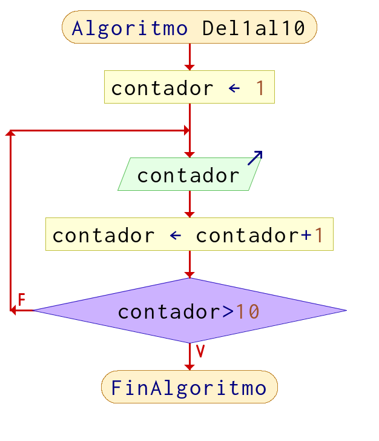
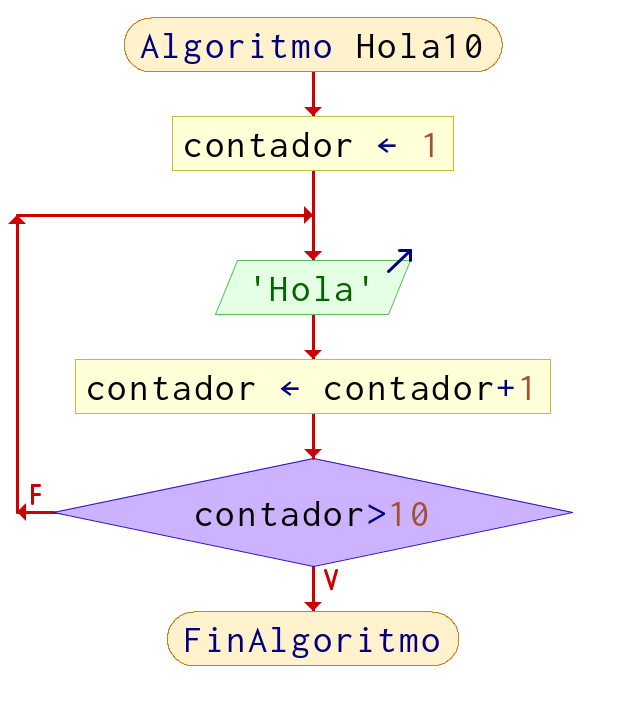
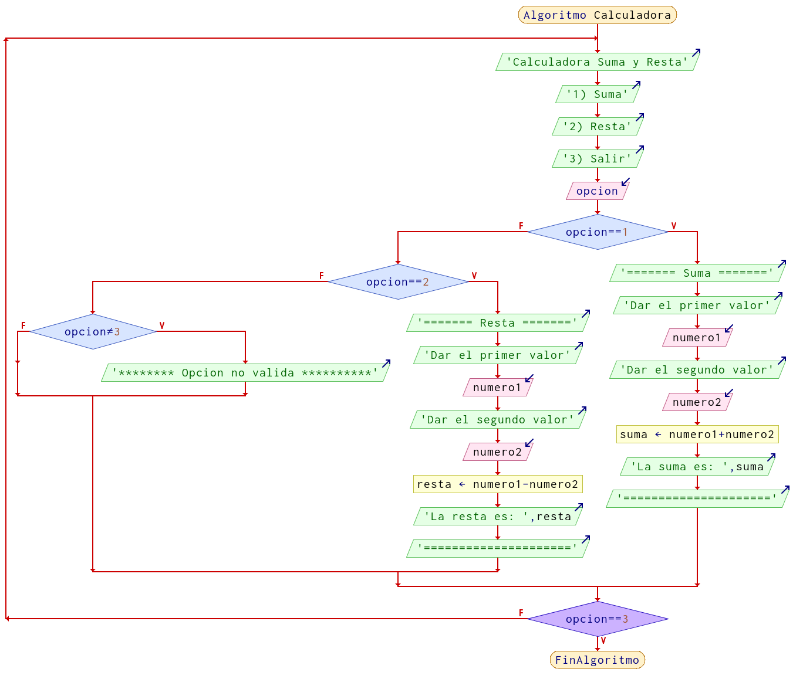

Ciclos (Loops) (for, while)
La estructura de repetición o ciclo no ayuda a realizar iteraciones para realizar acciones que se van a repetir una cantidad de veces o incluso infinitas ocasiones. Para que un ciclo termine se debe evaluar una comparación y con base al resultado, puede seguir o continuar.
Ejemplos de ciclos en la vida
- La respiración humana
- Los latidos del corazón
- La rotación de la tierra
- Las estaciones del año
- El ciclo de la vida
- El ciclo del agua
La variable auxiliar
Para poder lograr esto necesitamos una variable auxiliar la cual nos ayudara a saber si debemos terminar o continuar con la repetición.
Ejemplos de nombres que recibe esta variable: (Recordar las reglas de como nombrar variables)
xijkcontadorauxauxiliarcount
Son los nombres mas comunes que les dan a la variable que nos ayuda en el momento de que un ciclo comienza, avanza y termina, es nuestra bandera indicadora de estas tres acciones.
Ejemplos
Ejemplo 1
Imprimir del 1 al 10 Pseudocódigo
Algoritmo Del1al10
contador = 1 //variable auxiliar, indica en donde inicia a contar
Repetir
Imprimir contador
<!-- contador = contador + 1 // incremento cada iteración en 1 -->
Hasta Que contador > 10
FinAlgoritmo
Diagrama de Flujo

Ejemplo 2
Imprimir 10 veces la palabra "hola"
Pseudocódigo
Algoritmo Hola10
contador = 1
Repetir
Escribir 'Hola'
contador = contador+1
Hasta Que contador>10
FinAlgoritmo

Ejemplo 3
Realizar una calculadora que sume y reste, con la opción de salir, pero solo hasta que el usuario elija dicha opción, podrá terminar el programa, de lo contrario seguirá mostrando las opciones de operaciones que puede realizar
Pseudocódigo
Algoritmo Calculadora
Repetir
Imprimir "Calculadora Suma y Resta"
Imprimir "1) Suma"
Imprimir "2) Resta"
Imprimir "3) Salir"
Leer opcion
Si opcion == 1 Entonces
Imprimir "======= Suma ======="
Imprimir "Dar el primer valor"
Leer numero1
Imprimir "Dar el segundo valor"
Leer numero2
suma = numero1 + numero2
Imprimir "La suma es: ", suma
Imprimir "====================="
Sino
Si opcion == 2 Entonces
Imprimir "======= Resta ======="
Imprimir "Dar el primer valor"
Leer numero1
Imprimir "Dar el segundo valor"
Leer numero2
resta = numero1 - numero2
Imprimir "La resta es: ", resta
Imprimir "====================="
SiNo
Si opcion != 3 Entonces
Imprimir "******** Opcion no valida **********"
FinSi
FinSi
FinSi
Hasta Que opcion == 3
FinAlgoritmo

Nota: No es la única forma en la que se pueden realizar estos ejercicios, recuerda que lo importante es resolver el problema, que hayan mas o menos pasos, diferentes formulas, etc, no significa que este mal.